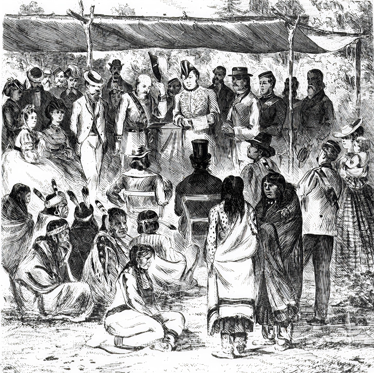
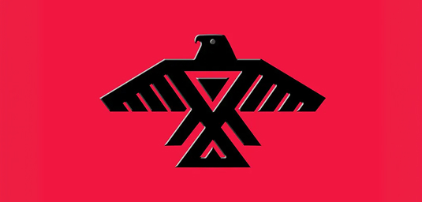
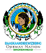

Welcome to the page of Indigenous People involved

People Negotiating Treaty 1
Fig. 1 - Picture of various people negotiating Treaty 1

Fig. 1 - Picture of various people negotiating Treaty 1
Many Indigenous peoples were involved in the signing of Treaty 1.
The Indigenous Nations involved in Treaty 1 were:

The Anishinaabe, also known as the Ojibwe people, were one of the main Indigenous groups involved in Treaty 1. They have a strong history and culture connected to Manitoba and other parts of Canada.

The Swampy Cree were another major Indigenous group involved in Treaty 1. Their communities have lived in Manitoba for many generations and continue to be an important part of Treaty 1 today.
Now that we know the Indigenous Nations involved in Treaty 1, we can look at the First Nations communities connected to the treaty.

Brokenhead
Sagkeeng

Long Plain
Peguis

Roseau River

Sandy Bay

Swan Lake
Since we have now identified which communities were involved in the negotiations and signing of Treaty 1, you may want to know which specific people were part of this process and what Nations they were from.

In conclusion, we have looked at what Indigenous Nations, communties, and people were involved in Treaty 1 and now you know who they are and what Nations they are from. You can check out what promises were made and the implementations of Treaty 1 on our promises and implementations page.